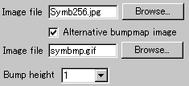
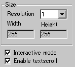
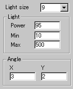

| |
|
Applet
Tutorials: Bumpy mapping
|
|
|
|
This applet gives an effect of a moving light source
over a bumpy surface, that casts shadow onto a selected image. You
can use two separate images for the screen and the bumpy filter
respectively. Or, alternatively, use a single image for both purposes.
The latter can reduce the necessary download file size quite effectively,
although good use of two separate images can create a stunning effect.
[For more technical
information about the available parameters, click here.]
Most parameters are self-explanatory and you can
always see brief description of each parameter by moving the mouse
pointer over the wizard.
|
 |
First, look at the left picture, there are two fields in
which you specify image files.
|
|
The lower file entering space is enabled only
when you check "Alternative bumpmap image"
box. So, these upper and lower images represent the screen
and the bumpy filter respectively. If you want to reduce the
total download size, leave "Alternative bumpmap image"
box unchecked.
Next, decide the power of the bumpy filter
by selecting a number from the "bump height"
pull-down menu. A higher value results in a bumpier shadow
cast over the screen.
|
 |
The applet "Width"
and "Height" are automatically entered when
you specify the screen image and a "Resolution"
value. "Resolution" is a zooming parameter.
|
|
For instance, the value 2 gives twice as large
an applet size as the screen size, while the value 1 changes
nothing.
Then you decide if textscroll function is
enabled by checking "Enable textscroll" box.
You can also check "Interactive mode" box,
if you would like the light source controlled by the mouse
pointer.
|
 |
Secondly, you define light
source values. An integral value n (>1) for
"Light size" gives the size of the light
source as nth power of 2. For instance, If your
choice of the value is 9, the light source would be 2^9
* 2^9, i.e., 512 * 512 pixels in size. |
|
|
Once you select a "Light power"
value from 1 to 100, you need to set the contrast at "light
Max" and "Light Min". "Light
Max" and "Light Min" take values
ranging between 1 and 511. Choose values so that the difference
of them is very high.
Note: A value for "Light Max"
must be higher than a value for "Light Min".
Finally, set the light source angle at "AngleX"
and "AngleY". These parameters represent
the velocity of light source movement relative to respective
XY co-ordinates. Higher values mean higher speed.
Proceed to the textscroll
menu if you have checked the textscroll box; otherwise
go to the expert menu.
|
|
|